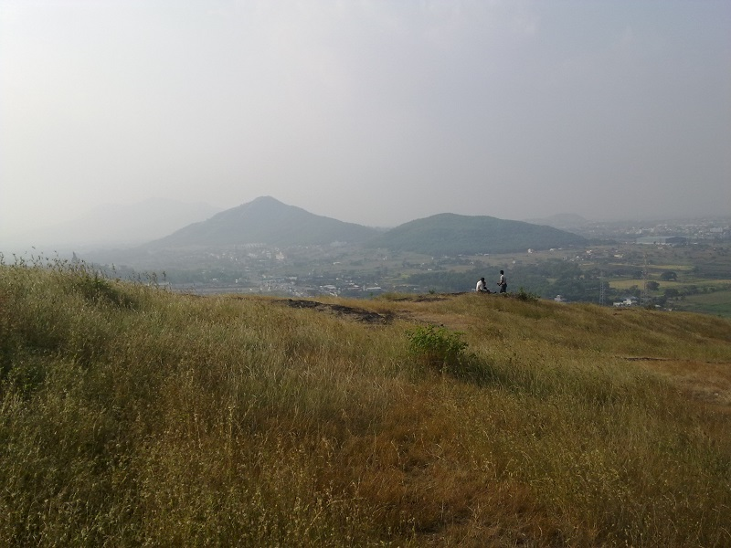
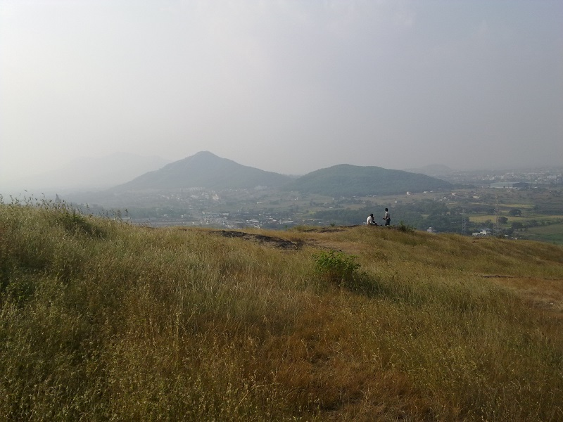

Ghoradeshwar
 

Category: trekking
About Place:
It is a small mountain where one can trek 15min to reach the top and the view is magnificent. One can also get a FANTASTIC view of MCA stadium the place where INDIA whitewashed Aussie in the test. Also you get to see the city lights if you climb before sunrise. If it's your 1st time going up, mark my words you “WILL NOT BE DISAPPOINTED”.
Season to visit: Any
Preferred time: Early Morning / Evening.
Type : Friends, Family
Author : Siddhant Sonawane